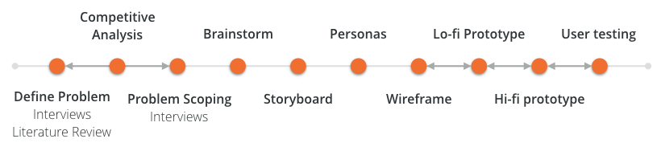

BuddyUp
A sport matching mobile app to bring sport-loving busy individuals back to the field
Project Type
Solo project of interaction design course
Role
It's a solo project that I researched, ideated and prototyped the entire user flow and interface
Duration
Fall 2017 (3 months)
Skills
Wireframing, Storyboard, Prototyping, Personas, Sketching, Competitive Analysis
🚧
This project is currently under construction. Check back later for a new design!
Challenge
How to make team sport accessible for busy people?
People enjoy not only the physical exercise but also the social contact between people from team sports. Team sports support people’s healthy lifestyle and avoid social isolation. However, gathering enough people for a good match is difficult even with existing social media services.
Design Process
Iterate for real needs
BuddyUp is a mobile app design of a semester-long solo project. I conducted the end-to-end research and design process, from stalking sport players on the field to validating design decisions by testing with target users. My design evolved along several rounds of iteration at different stages.
{kind=link}
Research
Needfinding to frame the problem
Interview
I conducted several rounds of Interviews with a total of 10 amateur sport players to identify their pain points. It turned out that their frustrations stemmed from three aspects:
Scheduling conflicts
Unclear information of games held by strangers
Lack of motivation to exercise alone
“I can’t go jogging for 2 hours in a row because i get bored, but for group sports like badminton, it’s fun and I can play for 2 hours.”
“There are regular games on Wednesdays, but I cannot make it.”
“I felt guilty joining the game [for dragging my team].”
Competitive Analysis
I analyzed multiple existing matching platforms, both physical and digital, including Meetup, Facebook groups, student clubs and Bvddy, to explore the current solution space users can utilize to find a team sport game to join. I discovered three main gaps that led to users’ frustrations.
Access to ad-hoc game opportunities for team sport
Connect with potential players
Unclear game information such as skill levels or gender preference
Ideation
Mapping needs to creative solutions
Brainstorm and storyboard
Based on the findings, I brainstormed for several solutions to tackle the users’ needs, and then expanded the sketches into scenarios that captured users’ pain points, emotion and interactions with each solution.

Personas
I created multiple pro-personas and an anti-persona based on the initial research and testings with sketches. The personas represent users’ goals and pain points that helped me to prioritize different user needs to guide the converging phase of my design process.


PROBLEM SCOPING
Narrow down the focus
Along the research phase, I constantly held short user interviews with the artifacts at hand to validate the design concept. This phase also defied some of the assumptions I had in the brainstorming phase. For example, I assumed from literature that peer competition would motivate people to do sports, however, my target users commented on the sketch during the interviews, saying “I would not find motivation in competition in the sport context.”
Synthesizing the findings, I decided the overarching design rationale for the following design process.
Build connections between users
Support motivation to maintain healthy habits
Establish relationships that extend beyond the one game
ITERATION AND REFINEMENT
Reasoning for design decisions
Wireframe flow and QOC analysis
Based on the design rationale, I developed multiple wireframes with different task flows. I then evaluated and landed on the final flow by conducting Questions-Options-Criteria analysis and collecting user feedbacks.


I developed wireframes of different task flows to evaluate the number of screens and logic of design
{kind=link}
QOC analysis for several design questions helps me evaluate the trade-offs between different options
Prototyping with different fidelity
Before crafting the high-fidelity prototype, I used paper prototype to evaluate the flow and interactions.
I then created hi-fi digital prototype with Sketch and InVision to yield more realistic experience. From high-level features to granular design elements, I tested and refined the design iteratively to achieve a final design that is easy-to-use and caters to the needs of the target users.
Design changes for even better
Testing with users along the design process enables me to identify spaces for improvement and refine my design for better usability and experience that caters to users’ needs. Some examples include:

Design Change 1
Reduce cluttering
To avoid overwhelming users with input fields, I reduced the number of fields and left customization in later flow.
“It seems there are so many to fill in before I can find people to play with.”

Design Change 2
Improve flexibility
Inclusive time window was added to improve flexible scheduling.
“I hope I can make the time for game less rigid and welcome drop in during a flexible time frame.”

Design Change 3
Maximize ability of game customization
Searching and customizing games with #keywords was inspired from users’ feedback to enhance the matching experience.
“I hope I can create a girls-only game.”
FINAL DESIGN
BuddyUp that brings busy people back to field
Interactive prototype
Impact

Engage sports community
BuddyUp engages sport lovers beyond of their personal network and opens up opportunities to achieve their goal of staying healthy, social lifestyle

Bridge information gaps
BuddyUp uncovers the gaps of existing services that frustrate the target users and provides them a platform that caters to their needs
TAKEAWAY
I am my own users, but I am not like my users
My design problem stemmed from my personal experience and frustration. With users participating along my design process, I have gained more comprehensive understanding of different factors surrounding the problem to reduce my design bias. I also found the iterative approach extremely critical to my design, and prototyping rapidly played a role in the process. Getting feedback from real users helped me to validate the hypothesis and refine my design at all levels.